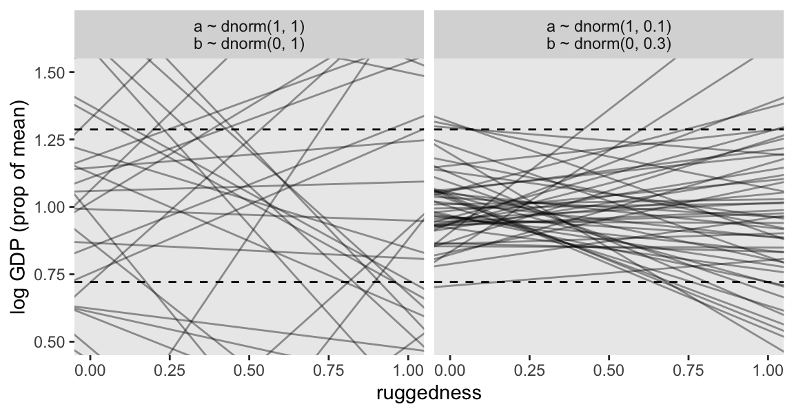

# Load
library(tidyverse)
library(ggdag)
library(rstan)
library(posterior)
library(loo)
library(tidybayes)
# Drop grid lines
theme_set(
theme_gray() +
theme(panel.grid = element_blank())
)8 Conditional Manatees
Load the packages.
8.1 Building an interaction
Let’s load the rugged data (Nunn & Puga, 2012).
data(rugged, package = "rethinking")
d <- rugged
rm(rugged)Make the first DAG.
dag_coords <- tibble(
name = c("R", "G", "C", "U"),
x = c(1, 2, 3, 2),
y = c(2, 2, 2, 1))
dagify(R ~ U,
G ~ R + U + C,
coords = dag_coords) |>
ggplot(aes(x = x, y = y, xend = xend, yend = yend)) +
geom_dag_point(aes(color = name == "U"),
alpha = 2/3, show.legend = FALSE, size = 6) +
geom_point(x = 2, y = 1,
shape = 1, size = 6, stroke = 3/4) +
geom_dag_text() +
geom_dag_edges() +
scale_color_viridis_d(option = "A", end = 0.6) +
theme_dag()8.1.0.1 Overthinking: Not so simple causation.
Here’s the DAG for a fuller model for the data.
dag_coords <- tibble(
name = c("G", "R", "H", "C", "U"),
x = c(1, 1.5, 2.5, 3.5, 1),
y = c(3, 2, 2, 2, 1))
dagify(G ~ R + U + H,
R ~ U,
H ~ R + U + C,
coords = dag_coords) |>
ggplot(aes(x = x, y = y, xend = xend, yend = yend)) +
geom_dag_point(aes(color = name == "U"),
alpha = 2/3, size = 6, show.legend = FALSE) +
geom_point(x = 1, y = 1,
shape = 1, size = 6, stroke = 3/4) +
geom_dag_text() +
geom_dag_edges() +
scale_color_viridis_d(option = "A", end = 0.6) +
theme_dag()
8.1.1 Making a rugged model.
We’ll continue to use tidyverse-style syntax to wrangle the data.
# Make the log version of criterion
d <- d |>
mutate(log_gdp = log(rgdppc_2000))
# Extract countries with GDP data
dd <- d |>
filter(complete.cases(rgdppc_2000)) |>
# Re-scale variables
mutate(log_gdp_std = log_gdp / mean(log_gdp),
rugged_std = rugged / max(rugged)) |>
# For plotting
mutate(nations = ifelse(cont_africa == 0, "Non-African nations", "African nations"))Before we fit our first Bayesian models, let’s back track a bit and make our version of Figure 8.2. In the title, McElreath indicated it was a depiction of two linear regressions separated by whether the nations were African. A fairly simple way to make those plots is to simultaneously fit and plot the two regression models using OLS via the geom_smooth() function using the method = "lm" argument.
country_vec <- c("Lesotho", "Seychelles", "Switzerland", "Tajikistan")
dd |>
ggplot(aes(x = rugged_std, y = log_gdp_std)) +
geom_smooth(method = "lm", formula = y ~ x) +
geom_point() +
geom_text(data = dd |>
filter(country %in% country_vec),
aes(label = country),
hjust = 0.99, size = 3, vjust = -0.6) +
labs(x = "ruggedness (standardized)",
y = "log GDP (as proportion of mean)") +
facet_wrap(~ nations)Our first Bayesian model will follow the form
\[ \begin{align*} \text{log-gdp-std}_i & \sim \operatorname{Normal}(\mu_i, \sigma) \\ \mu_i & = \alpha + \beta \left (\text{rugged-std}_i - \overline{\text{rugged-std}} \right ) \\ \alpha & \sim \operatorname{Normal}(1, 1) \\ \beta & \sim \operatorname{Normal}(0, 1) \\ \sigma & \sim \operatorname{Exponential}(1). \end{align*} \]
Here we compute \(\overline{\text{rugged-std}}\).
mean(dd$rugged_std)[1] 0.2149601To start the model fitting process, define the stan_data with the compose_data() function. Note how we define the xbar value within compose_data().
stan_data <- dd |>
select(log_gdp_std, rugged_std) |>
compose_data(xbar = mean(dd$rugged_std))
# What?
str(stan_data)List of 4
$ log_gdp_std: num [1:170(1d)] 0.88 0.965 1.166 1.104 0.915 ...
$ rugged_std : num [1:170(1d)] 0.138 0.553 0.124 0.125 0.433 ...
$ n : int 170
$ xbar : num 0.215Define what I’m calling stan_program_8.1a. Note that for this first version, we’ll be sampling from the prior.
stan_program_8.1a <- '
data {
int<lower=1> n;
real xbar;
vector[n] log_gdp_std;
vector[n] rugged_std;
}
parameters {
real a;
real b;
real<lower=0> sigma;
}
model {
// vector[n] mu;
// mu = a + b * (rugged_std - xbar);
// log_gdp_std ~ normal(mu, sigma);
a ~ normal(1, 1);
b ~ normal(0, 1);
sigma ~ exponential(1);
}
'Compile and fit the initial model with stan(). For the sake of bookkeeping, we’ll detract a little from the text and call this m8.1a. You’ll see why in a moment.
m8.1a <- stan(
data = stan_data,
model_code = stan_program_8.1a,
cores = 4, seed = 8)Define stan_program_8.1b. We’re still sampling from the prior, but this time the priors are tighter.
stan_program_8.1b <- '
data {
int<lower=1> n;
real xbar;
vector[n] log_gdp_std;
vector[n] rugged_std;
}
parameters {
real a;
real b;
real<lower=0> sigma;
}
model {
// vector[n] mu;
// mu = a + b * (rugged_std - xbar);
// log_gdp_std ~ normal(mu, sigma);
a ~ normal(1, 0.1);
b ~ normal(0, 0.3);
sigma ~ exponential(1);
}
'Now sample from the tighter priors, and call the object m8.1b.
m8.1b <- stan(
data = stan_data,
model_code = stan_program_8.1b,
cores = 4, seed = 8)Display the two prior-predictive distributions with Figure 8.3.
fit_labels <- c("a ~ dnorm(1, 1)\nb ~ dnorm(0, 1)", "a ~ dnorm(1, 0.1)\nb ~ dnorm(0, 0.3)")
bind_rows(as_draws_df(m8.1a), as_draws_df(m8.1b)) |>
mutate(fit = rep(c("m8.1a", "m8.1b"), each = n() / 2)) |>
group_by(fit) |>
slice_sample(n = 50) |>
expand_grid(rugged_std = c(-1, 2),
xbar = mean(dd$rugged_std)) |>
mutate(log_gdp_std = a + b * (rugged_std - xbar),
fit = factor(fit, labels = fit_labels)) |>
ggplot(aes(x = rugged_std, y = log_gdp_std, group = .draw)) +
geom_hline(yintercept = range(dd$log_gdp_std), linetype = 2) +
geom_line(alpha = 0.4) +
labs(x = "ruggedness",
y = "log GDP (prop of mean)") +
coord_cartesian(xlim = c(0, 1),
ylim = c(0.5, 1.5)) +
facet_wrap(~fit)
Now define what we’ll just call stan_program_8.1, where the likelihood is now included in the model block. Note how we’re also defining the log_lik vector within the generated quantities block so we can compute information criteria later.
stan_program_8.1 <- '
data {
int<lower=1> n;
real xbar;
vector[n] log_gdp_std;
vector[n] rugged_std;
}
parameters {
real a;
real b;
real<lower=0> sigma;
}
transformed parameters {
vector[n] mu;
mu = a + b * (rugged_std - xbar);
}
model {
log_gdp_std ~ normal(mu, sigma);
a ~ normal(1, 0.1);
b ~ normal(0, 0.3);
sigma ~ exponential(1);
}
generated quantities {
vector[n] log_lik;
for (i in 1:n) log_lik[i] = normal_lpdf(log_gdp_std[i] | mu[i], sigma);
}
'Sample from the posterior.
m8.1 <- stan(
data = stan_data,
model_code = stan_program_8.1,
cores = 4, seed = 8)Check the summary for b8.1.
print(m8.1, pars = c("a", "b", "sigma"), probs = c(0.05, 0.945))Inference for Stan model: anon_model.
4 chains, each with iter=2000; warmup=1000; thin=1;
post-warmup draws per chain=1000, total post-warmup draws=4000.
mean se_mean sd 5% 94.5% n_eff Rhat
a 1.00 0 0.01 0.98 1.02 3775 1
b 0.00 0 0.06 -0.09 0.09 3533 1
sigma 0.14 0 0.01 0.13 0.15 3726 1
Samples were drawn using NUTS(diag_e) at Mon Aug 5 21:07:01 2024.
For each parameter, n_eff is a crude measure of effective sample size,
and Rhat is the potential scale reduction factor on split chains (at
convergence, Rhat=1).8.1.1.1 Rethinking: Practicing for when it matters.
8.1.2 Adding an indicator variable isn’t enough.
Make the cid index variable.
dd <- dd |>
mutate(cid = if_else(cont_africa == 1, "1", "2"))Update the stan_data to include the cid index. As we have saved cid as a character variable, note how compose_data() automatically computes an n_cid value.
stan_data <- dd |>
select(log_gdp_std, rugged_std, cid) |>
compose_data(xbar = mean(dd$rugged_std))
# What?
str(stan_data)List of 6
$ log_gdp_std: num [1:170(1d)] 0.88 0.965 1.166 1.104 0.915 ...
$ rugged_std : num [1:170(1d)] 0.138 0.553 0.124 0.125 0.433 ...
$ cid : num [1:170(1d)] 1 2 2 2 2 2 2 2 2 1 ...
$ n_cid : int 2
$ n : int 170
$ xbar : num 0.215Make stan_program_8.2 for the varying-intercepts model.
stan_program_8.2 <- '
data {
int<lower=1> n;
int<lower=1> n_cid;
real xbar;
int cid[n];
vector[n] rugged_std;
vector[n] log_gdp_std;
}
parameters {
vector[n_cid] a;
real b;
real<lower=0> sigma;
}
transformed parameters {
vector[n] mu;
mu = a[cid] + b * (rugged_std - xbar);
}
model {
log_gdp_std ~ normal(mu, sigma);
a ~ normal(1, 0.1);
b ~ normal(0, 0.3);
sigma ~ exponential(1);
}
generated quantities {
vector[n] log_lik;
for (i in 1:n) log_lik[i] = normal_lpdf(log_gdp_std[i] | mu[i], sigma);
}
'Sample from the posterior.
m8.2 <- stan(
data = stan_data,
model_code = stan_program_8.2,
cores = 4, seed = 8)Check the summary for b8.2.
print(m8.2, pars = c("a", "b", "sigma"), probs = c(0.05, 0.945))Inference for Stan model: anon_model.
4 chains, each with iter=2000; warmup=1000; thin=1;
post-warmup draws per chain=1000, total post-warmup draws=4000.
mean se_mean sd 5% 94.5% n_eff Rhat
a[1] 0.88 0 0.02 0.85 0.91 4035 1
a[2] 1.05 0 0.01 1.03 1.07 4227 1
b -0.05 0 0.05 -0.12 0.03 4267 1
sigma 0.11 0 0.01 0.10 0.13 4134 1
Samples were drawn using NUTS(diag_e) at Mon Aug 5 21:10:09 2024.
For each parameter, n_eff is a crude measure of effective sample size,
and Rhat is the potential scale reduction factor on split chains (at
convergence, Rhat=1).Use the extract_log_lik() and waic() functions to compute the WAIC summaries for the models.
w8.1 <- extract_log_lik(m8.1) |>
waic()
w8.2 <- extract_log_lik(m8.2) |>
waic()Use the loo_compare() functions to compare the models by their WAIC distributions.
loo_compare(w8.1, w8.2) |>
print(simplify = FALSE) elpd_diff se_diff elpd_waic se_elpd_waic p_waic se_p_waic waic se_waic
model2 0.0 0.0 126.2 7.4 4.1 0.8 -252.4 14.8
model1 -31.8 7.3 94.4 6.5 2.6 0.3 -188.8 13.0 I’m not going to continue to compute the WAIC weights by hand, like in Section 7.5.1, but here are the stacking weights.
loo_model_weights(
list(extract_log_lik(m8.1) |> loo(),
extract_log_lik(m8.2) |> loo()),
method = "stacking")Method: stacking
------
weight
model1 0.030
model2 0.970 Here’s the posterior mean and 89% interval for the \(a_{[1]} - a_{[2]}\) contrast.
m8.2 |>
spread_draws(a[j]) |>
# Requires the emmeans package for this `comparison` option
compare_levels(a, j, comparison = emmeans_comparison("revpairwise")) |>
mean_qi(a, .width = 0.89)# A tibble: 1 × 7
j a .lower .upper .width .point .interval
<chr> <dbl> <dbl> <dbl> <dbl> <chr> <chr>
1 2 - 1 0.168 0.138 0.199 0.89 mean qi Here’s a way to make Figure 8.4.
as_draws_df(m8.2) |>
select(.draw, `a[1]`:sigma) |>
expand_grid(cid = distinct(dd, cid) |> pull(),
rugged_std = seq(from = -0.1, to = 1.1, length.out = 30),
xbar = mean(dd$rugged_std)) |>
mutate(nations = ifelse(cid == "1", "African nations", "Non-African nations"),
mu = case_when(
cid == "1" ~ `a[1]` + b * (rugged_std - xbar),
cid == "2" ~ `a[2]` + b * (rugged_std - xbar))) |>
ggplot(aes(x = rugged_std, color = nations)) +
stat_lineribbon(aes(y = mu, fill = nations),
.width = 0.97, alpha = 1/3) +
geom_point(data = dd,
aes(y = log_gdp_std)) +
scale_color_viridis_d(NULL, option = "B", begin = 0.2, end = 0.6) +
scale_fill_viridis_d(NULL, option = "B", begin = 0.2, end = 0.6) +
labs(x = "ruggedness (standardized)",
y = "log GDP (prop of mean)") +
coord_cartesian(xlim = 0:1)Note our use of the case_when() function when defining the linear models for the two levels of cid.
8.1.2.1 Rethinking: Why 97%?
8.1.3 Adding an interaction does work.
In stan_program_8.3 we add an interaction to the model via the index-variable approach by setting vector[n_cid] b within the parameters block, and then by setting b[cid] in the mu formula within the transformed parameters block.
stan_program_8.3 <- '
data {
int<lower=1> n;
int<lower=1> n_cid;
real xbar;
int cid[n];
vector[n] rugged_std;
vector[n] log_gdp_std;
}
parameters {
vector[n_cid] a;
vector[n_cid] b;
real<lower=0> sigma;
}
transformed parameters {
vector[n] mu;
mu = a[cid] + b[cid] .* (rugged_std - xbar);
}
model {
log_gdp_std ~ normal(mu, sigma);
a ~ normal(1, 0.1);
b ~ normal(0, 0.3);
sigma ~ exponential(1);
}
generated quantities {
vector[n] log_lik;
for (i in 1:n) log_lik[i] = normal_lpdf(log_gdp_std[i] | mu[i], sigma);
}
'Sample from the posterior.
m8.3 <- stan(
data = stan_data,
model_code = stan_program_8.3,
cores = 4, seed = 8)Check the summary for b8.2.
print(m8.3, pars = c("a", "b", "sigma"), probs = c(0.05, 0.945))Inference for Stan model: anon_model.
4 chains, each with iter=2000; warmup=1000; thin=1;
post-warmup draws per chain=1000, total post-warmup draws=4000.
mean se_mean sd 5% 94.5% n_eff Rhat
a[1] 0.89 0 0.02 0.86 0.91 4523 1
a[2] 1.05 0 0.01 1.03 1.07 4717 1
b[1] 0.13 0 0.08 0.01 0.26 4369 1
b[2] -0.14 0 0.05 -0.23 -0.05 4278 1
sigma 0.11 0 0.01 0.10 0.12 4404 1
Samples were drawn using NUTS(diag_e) at Mon Aug 5 21:17:51 2024.
For each parameter, n_eff is a crude measure of effective sample size,
and Rhat is the potential scale reduction factor on split chains (at
convergence, Rhat=1).Compute and save the waic() summary for m8.3.
w8.3 <- extract_log_lik(m8.3) |>
waic()Use the loo_compare() functions to compare the three models by their WAIC estimates.
loo_compare(w8.1, w8.2, w8.3) |>
print(simplify = FALSE) elpd_diff se_diff elpd_waic se_elpd_waic p_waic se_p_waic waic se_waic
model3 0.0 0.0 129.8 7.3 4.8 0.8 -259.5 14.7
model2 -3.6 3.2 126.2 7.4 4.1 0.8 -252.4 14.8
model1 -35.4 7.5 94.4 6.5 2.6 0.3 -188.8 13.0 McElreath mentioned Pareto-\(k\) warnings as a reason to switch to the loo().
l8.1 <- extract_log_lik(m8.1) |>
loo()
l8.2 <- extract_log_lik(m8.2) |>
loo()
l8.3 <- extract_log_lik(m8.3) |>
loo()We can make a quick plot for the \(k\) values by inserting our loo() objects into the plot() function.
plot(l8.3)McElreath is using an 0.5 threshold for the \(k\) values, but the loo team currently uses 0.7 for warnings. We can get a sense of that with the pareto_k_table() function.
pareto_k_table(l8.3)
All Pareto k estimates are good (k < 0.7).However, if we wanted to see which cases might be above 0.5, we could use pareto_k_ids() with threshold = 0.5.
pareto_k_ids(l8.3, threshold = 0.5)[1] 93Case number 93 in the data was above 0.5. We can extract their specific \(k\) value with the pareto_k_values() function.
pareto_k_values(l8.3)[93][1] 0.5597555Anyway, here’s the comparison by the loo().
loo_compare(l8.1, l8.2, l8.3) |>
print(simplify = FALSE) elpd_diff se_diff elpd_loo se_elpd_loo p_loo se_p_loo looic se_looic
model3 0.0 0.0 129.7 7.3 4.9 0.9 -259.4 14.7
model2 -3.5 3.2 126.2 7.4 4.1 0.8 -252.3 14.8
model1 -35.3 7.5 94.4 6.5 2.6 0.3 -188.8 13.0 Here are the stacking weights.
loo_model_weights(
list(l8.1, l8.2, l8.3),
method = "stacking")Method: stacking
------
weight
model1 0.000
model2 0.123
model3 0.877 They don’t match up exactly with the LOO weights McElreath reported in the text (p. 249), but the basic pattern is the same.
8.1.4 Plotting the interaction.
The code for Figure 8.5 is a minor extension of the code we used for Figure 8.4. The main changes are the mu formulas have changed within case_when(), and we have added a call to facet_wrap().
as_draws_df(m8.3) |>
select(.draw, `a[1]`:sigma) |>
expand_grid(cid = distinct(dd, cid) |> pull(),
rugged_std = seq(from = -0.1, to = 1.1, length.out = 30),
xbar = mean(dd$rugged_std)) |>
mutate(nations = ifelse(cid == "1", "African nations", "Non-African nations"),
mu = case_when(
cid == "1" ~ `a[1]` + `b[1]` * (rugged_std - xbar),
cid == "2" ~ `a[2]` + `b[2]` * (rugged_std - xbar))) |>
ggplot(aes(x = rugged_std, color = nations)) +
stat_lineribbon(aes(y = mu, fill = nations),
.width = 0.97, alpha = 1/3) +
geom_point(data = dd,
aes(y = log_gdp_std)) +
scale_color_viridis_d(option = "B", begin = 0.2, end = 0.6, breaks = NULL) +
scale_fill_viridis_d(option = "B", begin = 0.2, end = 0.6, breaks = NULL) +
labs(x = "ruggedness (standardized)",
y = "log GDP (prop of mean)") +
coord_cartesian(xlim = 0:1) +
facet_wrap(~ nations)8.1.4.1 Rethinking: All Greek to me.
8.2 Symmetry of interactions
Another way to express the model is
\[ \begin{align*} \mu_i & = \underbrace{(2 - \text{cid}_{i}) \left (\alpha_1 + \beta_1 \left [\text{rugged-std}_i - \overline{\text{rugged-std}} \right ] \right )}_{\text{cid}[i] = 1} \\ & \;\;\; + \underbrace{(\text{cid}_{i} - 1) \left (\alpha_2 + \beta_2 \left [\text{rugged-std}_i - \overline{\text{rugged-std}} \right ] \right )}_{\text{cid}[i] = 2}, \end{align*} \]
where the first term vanishes when \(\text{cid}_i = 2\) and the second term vanishes when \(\text{cid}_i = 1\). In contrast to the plots above, we can re-express this equation as saying “The association of being in Africa with log GDP depends upon terrain ruggedness” (p. 251, emphasis in the original). Here we follow McElreath’s Figure 8.6 and plot the difference between a nation in Africa and outside Africa, conditional on ruggedness.
as_draws_df(m8.3) |>
select(.draw, `a[1]`:sigma) |>
expand_grid(cid = distinct(dd, cid) |> pull(),
rugged_std = seq(from = -0.1, to = 1.1, length.out = 30),
xbar = mean(dd$rugged_std)) |>
mutate(nations = ifelse(cid == "1", "African nations", "Non-African nations"),
mu = case_when(
cid == "1" ~ `a[1]` + `b[1]` * (rugged_std - xbar),
cid == "2" ~ `a[2]` + `b[2]` * (rugged_std - xbar))) |>
group_by(rugged_std) |>
compare_levels(mu, by = nations, comparison = list(c("African nations", "Non-African nations")), draw_indices = ".draw") |>
ggplot(aes(x = rugged_std, y = mu)) +
stat_lineribbon(.width = 0.97, alpha = 1/3, fill = "gray50") +
geom_hline(yintercept = 0, linetype = 2) +
annotate(geom = "text",
x = 0, y = 0,
label = "Africa higher GDP\nAfrica lower GDP",
hjust = 0) +
labs(x = "ruggedness (standardized)",
y = "expected difference log GDP") +
coord_cartesian(xlim = c(0, 1),
ylim = c(-0.3, 0.2)) +
theme(legend.position = "none")8.3 Continuous interactions
8.3.1 A winter flower.
Look at the tulips data, which were adapted from Grafen & Hails (2002).
data(tulips, package = "rethinking")
d <- tulips
rm(tulips)
glimpse(d)Rows: 27
Columns: 4
$ bed <fct> a, a, a, a, a, a, a, a, a, b, b, b, b, b, b, b, b, b, c, c, c, …
$ water <int> 1, 1, 1, 2, 2, 2, 3, 3, 3, 1, 1, 1, 2, 2, 2, 3, 3, 3, 1, 1, 1, …
$ shade <int> 1, 2, 3, 1, 2, 3, 1, 2, 3, 1, 2, 3, 1, 2, 3, 1, 2, 3, 1, 2, 3, …
$ blooms <dbl> 0.00, 0.00, 111.04, 183.47, 59.16, 76.75, 224.97, 83.77, 134.95…8.3.2 The models.
Wrangle a little.
d <- d |>
mutate(blooms_std = blooms / max(blooms),
water_cent = water - mean(water),
shade_cent = shade - mean(shade))If we let \(B\), \(W\), and \(S\) stand for the scaled/centered versions of the variables, we might express an unconditional (additive) model as
\[ \begin{align*} B_i & \sim \operatorname{Normal}(\mu_i, \sigma) \\ \mu_i & = \alpha + \beta_1 W_i + \beta_2 S_i \\ \alpha & \sim \operatorname{Normal}(0.5, 1) \\ \beta_1 & \sim \operatorname{Normal}(0, 1) \\ \beta_2 & \sim \operatorname{Normal}(0, 1) \\ \sigma & \sim \operatorname{Exponential}(1). \end{align*} \]
Even though “the intercept \(\alpha\) must be greater than zero and less than one,… this prior assigns most of the probability outside that range” (p. 254).
set.seed(8)
tibble(a = rnorm(n = 1e4, mean = 0.5, sd = 1)) |>
summarise(proportion_outside_of_the_range = sum(a < 0 | a > 1) / n())# A tibble: 1 × 1
proportion_outside_of_the_range
<dbl>
1 0.621Tightening up the prior to \(\operatorname{Normal}(0, 0.25)\) helps.
set.seed(8)
tibble(a = rnorm(n = 1e4, mean = 0.5, sd = 0.25)) |>
summarise(proportion_outside_of_the_range = sum(a < 0 | a > 1) / n())# A tibble: 1 × 1
proportion_outside_of_the_range
<dbl>
1 0.0501Here are the ranges for our two predictors.
range(d$water_cent)[1] -1 1range(d$shade_cent)[1] -1 1Putting the same \(\operatorname{Normal}(0, 0.25)\) prior on each would indicate a 0.95 probability each coefficient would be within -0.5 to 0.5. Since the total range for both is \(1 - (-1) = 2\), that would imply either could account for the full range of blooms_std because \(0.5 \cdot 2 = 1\), which is the full range of blooms_std. Our first model, then, will be
\[ \begin{align*} B_i & \sim \operatorname{Normal}(\mu_i, \sigma) \\ \mu_i & = \alpha + \beta_1 W_i + \beta_2 S_i \\ \alpha & \sim \operatorname{Normal}(0.5, 0.25) \\ \beta_1 & \sim \operatorname{Normal}(0, 0.25) \\ \beta_2 & \sim \operatorname{Normal}(0, 0.25) \\ \sigma & \sim \operatorname{Exponential}(1). \end{align*} \]
With our second model we extend to the interaction model,
\[ \begin{align*} B_i & \sim \operatorname{Normal}(\mu_i, \sigma) \\ \mu_i & = \alpha + \beta_1 W_i + \beta_2 S_i + \beta_3 W_i S_i \\ \alpha & \sim \operatorname{Normal}(0.5, 0.25) \\ \beta_1, \dots, \beta_3 & \sim \operatorname{Normal}(0, 0.25) \\ \sigma & \sim \operatorname{Exponential}(1), \end{align*} \]
where \(\beta_3\) is the continuous interaction term.
Make the stan_data.
This time when we fit the model, we’ll build in some model-based expected values within the generated quantities block. To prepare, we’ll first make a data frame with our predictor grid.
d_pred <- crossing(
w = -1:1,
s = -1:1) |>
mutate(i = 1:n())
# What?
print(d_pred)# A tibble: 9 × 3
w s i
<int> <int> <int>
1 -1 -1 1
2 -1 0 2
3 -1 1 3
4 0 -1 4
5 0 0 5
6 0 1 6
7 1 -1 7
8 1 0 8
9 1 1 9Now make the stan_data. Note how we’ve defined the w_pred through n_pred values within compose_data(), based on our predictor grid d_pred.
stan_data <- d |>
transmute(b = blooms_std,
w = water_cent,
s = shade_cent) |>
compose_data(w_pred = pull(d_pred, w),
s_pred = pull(d_pred, s),
n_pred = nrow(d_pred))
# What?
str(stan_data)List of 7
$ b : num [1:27(1d)] 0 0 0.307 0.507 0.164 ...
$ w : num [1:27(1d)] -1 -1 -1 0 0 0 1 1 1 -1 ...
$ s : num [1:27(1d)] -1 0 1 -1 0 1 -1 0 1 -1 ...
$ n : int 27
$ w_pred: int [1:9] -1 -1 -1 0 0 0 1 1 1
$ s_pred: int [1:9] -1 0 1 -1 0 1 -1 0 1
$ n_pred: int 9Make stan_program_8.4 and stan_program_8.5.
# No interaction
stan_program_8.4 <- '
data {
int<lower=1> n;
int<lower=1> n_pred;
vector[n] b;
vector[n] s;
vector[n] w;
vector[n_pred] s_pred;
vector[n_pred] w_pred;
}
parameters {
real a;
real b1;
real b2;
real<lower=0> sigma;
}
model {
b ~ normal(a + b1 * w + b2 * s, sigma);
a ~ normal(0.5, 0.25);
b1 ~ normal(0, 0.25);
b2 ~ normal(0, 0.25);
sigma ~ exponential(1);
}
generated quantities {
vector[n_pred] mu;
mu = a + b1 * w_pred + b2 * s_pred;
}
'
# Interaction
stan_program_8.5 <- '
data {
int<lower=1> n;
int<lower=1> n_pred;
vector[n] b;
vector[n] s;
vector[n] w;
vector[n_pred] s_pred;
vector[n_pred] w_pred;
}
parameters {
real a;
real b1;
real b2;
real b3;
real<lower=0> sigma;
}
model {
b ~ normal(a + b1 * w + b2 * s + b3 .* w .* s, sigma);
a ~ normal(0.5, 0.25);
[b1, b2, b3] ~ normal(0, 0.25);
sigma ~ exponential(1);
}
generated quantities {
vector[n_pred] mu;
mu = a + b1 * w_pred + b2 * s_pred + b3 .* w_pred .* s_pred;
}
'Sample from the two posteriors.
m8.4 <- stan(
data = stan_data,
model_code = stan_program_8.4,
cores = 4, seed = 8)
m8.5 <- stan(
data = stan_data,
model_code = stan_program_8.5,
cores = 4, seed = 8)Check the summaries for m8.4 and m8.5.
print(m8.4, include = FALSE, pars = "mu", probs = c(0.05, 0.945))Inference for Stan model: anon_model.
4 chains, each with iter=2000; warmup=1000; thin=1;
post-warmup draws per chain=1000, total post-warmup draws=4000.
mean se_mean sd 5% 94.5% n_eff Rhat
a 0.36 0.00 0.04 0.30 0.42 4370 1
b1 0.20 0.00 0.04 0.14 0.27 4269 1
b2 -0.11 0.00 0.04 -0.18 -0.05 4965 1
sigma 0.18 0.00 0.03 0.14 0.22 3297 1
lp__ 31.41 0.04 1.55 28.36 33.23 1468 1
Samples were drawn using NUTS(diag_e) at Mon Aug 5 21:26:39 2024.
For each parameter, n_eff is a crude measure of effective sample size,
and Rhat is the potential scale reduction factor on split chains (at
convergence, Rhat=1).print(m8.5, include = FALSE, pars = "mu", probs = c(0.05, 0.945))Inference for Stan model: anon_model.
4 chains, each with iter=2000; warmup=1000; thin=1;
post-warmup draws per chain=1000, total post-warmup draws=4000.
mean se_mean sd 5% 94.5% n_eff Rhat
a 0.36 0.00 0.03 0.31 0.40 4937 1
b1 0.20 0.00 0.03 0.15 0.26 4643 1
b2 -0.11 0.00 0.03 -0.17 -0.06 5296 1
b3 -0.14 0.00 0.04 -0.21 -0.08 4498 1
sigma 0.14 0.00 0.02 0.11 0.18 3684 1
lp__ 36.87 0.04 1.75 33.57 39.01 1728 1
Samples were drawn using NUTS(diag_e) at Mon Aug 5 21:27:06 2024.
For each parameter, n_eff is a crude measure of effective sample size,
and Rhat is the potential scale reduction factor on split chains (at
convergence, Rhat=1).Here’s a look at the \(\beta_3\) posterior.
as_draws_df(m8.5) |>
ggplot(aes(x = b3)) +
stat_halfeye(.width = 0.89) +
scale_y_continuous(NULL, breaks = NULL) +
xlab(expression(beta[3]~(the~continuous~interaction~term)))8.3.2.1 Overthinking: How is interaction formed?
8.3.3 Plotting posterior predictions.
Here’s how we might use spread_draws() to make Figure 8.7.
set.seed(8)
bind_rows(
spread_draws(m8.4, mu[i], ndraws = 20),
spread_draws(m8.5, mu[i], ndraws = 20)
) |>
mutate(fit = rep(c("m8.4", "m8.5"), each = n() / 2)) |>
left_join(d_pred, by = join_by(i)) |>
mutate(s = str_c("shade~(centered)==", s)) |>
ggplot() +
geom_line(aes(x = w, y = mu, group = .draw),
alpha = 1/3, color = "blue", linewidth = 1/3) +
geom_point(data = d |>
mutate(s = str_c("shade~(centered)==", shade_cent)),
aes(x = water_cent, y = blooms_std)) +
labs(x = "water (centered)",
y = "blooms (scaled)") +
facet_grid(fit ~ s, labeller = label_parsed)8.3.4 Plotting prior predictions.
To plot the prior-predictive expectations, we’ll need to first sample from the priors. Toward that end, we define what I’ll call stan_program_8.4p and stan_program_8.5p.
# No interaction
stan_program_8.4p <- '
data {
int<lower=1> n;
int<lower=1> n_pred;
vector[n] b;
vector[n] s;
vector[n] w;
vector[n_pred] s_pred;
vector[n_pred] w_pred;
}
parameters {
real a;
real b1;
real b2;
real<lower=0> sigma;
}
model {
// Only the priors
a ~ normal(0.5, 0.25);
b1 ~ normal(0, 0.25);
b2 ~ normal(0, 0.25);
sigma ~ exponential(1);
}
generated quantities {
vector[n_pred] mu;
mu = a + b1 * w_pred + b2 * s_pred;
}
'
# Interaction
stan_program_8.5p <- '
data {
int<lower=1> n;
int<lower=1> n_pred;
vector[n] b;
vector[n] s;
vector[n] w;
vector[n_pred] s_pred;
vector[n_pred] w_pred;
}
parameters {
real a;
real b1;
real b2;
real b3;
real<lower=0> sigma;
}
model {
// Only the priors
a ~ normal(0.5, 0.25);
[b1, b2, b3] ~ normal(0, 0.25);
sigma ~ exponential(1);
}
generated quantities {
vector[n_pred] mu;
mu = a + b1 * w_pred + b2 * s_pred + b3 .* w_pred .* s_pred;
}
'Sample from the two priors with stan().
m8.4p <- stan(
data = stan_data,
model_code = stan_program_8.4p,
cores = 4, seed = 8)
m8.5p <- stan(
data = stan_data,
model_code = stan_program_8.5p,
cores = 4, seed = 8)Now make Figure 8.8.
set.seed(8)
bind_rows(
spread_draws(m8.4p, mu[i], ndraws = 20),
spread_draws(m8.5p, mu[i], ndraws = 20)
) |>
mutate(fit = rep(c("m8.4~(prior)", "m8.5~(prior)"), each = n() / 2)) |>
left_join(d_pred, by = join_by(i)) |>
mutate(s = str_c("shade~(centered)==", s)) |>
ggplot(aes(x = w, y = mu)) +
geom_hline(yintercept = 0:1, color = "white", linetype = 2) +
geom_line(aes(group = .draw),
alpha = 1/3, color = "blue", linewidth = 1/3) +
scale_y_continuous("blooms (scaled)", breaks = 0:2 / 2) +
xlab("water (centered)") +
coord_cartesian(ylim = c(-0.5, 1.5)) +
facet_grid(fit ~ s, labeller = label_parsed)
Comments